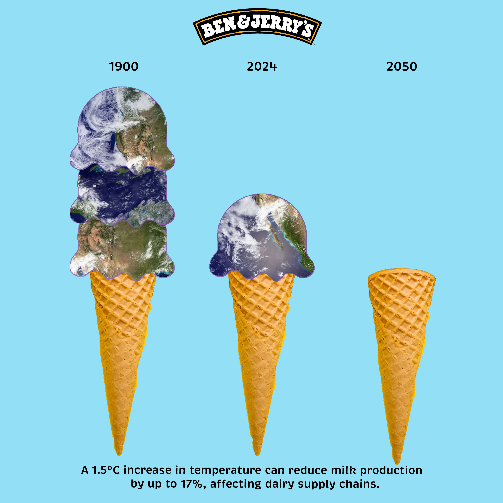

Designs by Shay
In high school, I became a self-taught graphic designer, creating graphics for student-athletes and athletic teams. You’ll also find my final campaign for Ben & Jerry’s, developed for my graphic design course. All designs were created using Adobe Photoshop.


